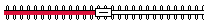
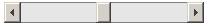

Initialization of dhtmlxSlider
dhtmlxSlider can be initialized on page using one of the following initialization schemes:
- Minimal Initialization;
- Extended Initialization;
- Initialization by Object Notation;
- Inline Initialization;
- Initialization from HTML Input.
The first things that need to be done for any type of dhtmlxSlider's initialization are the following:
- Download the dhtmlxSlider package from the server and place it in a folder;
- Create an html file;
- Place the full paths to dhtmlxSlider's CSS and JS files into the header of the created html file;
<head> <link rel="stylesheet" type="text/css" href="[full path to this file]/dhtmlxslider.css"> <script src="[full path to this file/dhtmlxcommon.js"></script> <script src="[full path to this file]/dhtmlxslider.js"></script> </script>
Setting Image Path
The following ways of setting image path are available in dhtmlxSlider:
- Through setImagePath() - this method should be used to set the full path to the directory, where slider image files are located:
<script> sld.setImagePath("[full path to this category]/codeabse/imgs/"); // should be used after creation of slider's object </script>
- As global JS variable window.dhx_globalImagePath:
<head> ... <script src="[full path to this file]/dhtmlxslider.js"></script> <script>window.dhx_globalImgPath="[full path to this category]/codebase/imgs/";</script> // sets image path </head>
Minimal Initialization
The user needs to create an object where dhtmlxSlider will be placed later. In this example the object is a <div> element on page which is placed in the <body> tag:
<div id="slider"></div>
The next step is to create a new dhtmlxSlider and place it after the <div> element (object) that we've just created:
<script> var sld = new dhtmlxSlider(container, size); </script>
The parameters in the above mentioned code string are the following:
- container(id) - id of the object inside which the Slider will be created;
- size(px) - size of the slider (in pixels).
The last command that should be called in order to initialize the component is:
<script> sld.init(); </script>
When the page is loaded, the slider will be displayed on page with the minimum value set in it.
Extended Initialization
Creating a Slider with extended initialization, the user should call the same commands described in Minimal initialization.
The code for extended initialization should be like this:
<script> var sld = new dhtmlxSlider(container, size, skin, vertical, min, max, value, step); sld.init(); </script>
The parameters the user should indicate are as follows:
- container(id) - id of the object inside which the Slider will be created;
- size(px) - size of the slider (in pixels);
- skin(skin_name) - name of the skin applied;
- vertical(true|false) - vertical orientation flag, set to false by default;
- minValue (value) - minimum slider's value;
- maxValue (value) - maximum slider's value;
- value (value) - slider's current value;
- step(value) - step of the slider.
When the page is loaded, the slider will be displayed on page with the current value set in it.
Initialization by Object Notation
Initialization of this kind is similar to the above mentioned types. The only difference is that the second parameter is an object containing all the initialization parameters:
<div id="slider"></div> <script> var sld = new dhtmlxSlider("slider", { size:100, skin: "ball", vertical:false, step:1, min:1, max:100, value:50 }); sld.init(); </script>
Inline Initialization
This type of initialization presupposes that the Slider can be created without indicating the object for it. It should be noted that the slider will be created at the same place where the initialization script was called:
<script> var sld = new dhtmlxSlider(null, 300); //or var sld = new dhtmlxSlider(null, { size:100, skin: "ball", vertical:false, step:1, min:1, max:100, value:50 }); sld.init(); </script>
Initialization from HTML Input
The user can initialize the Slider from some existing HTML input. The thing that needs to be done for that is adding dhtmlxSlider's CSS class to it. The user should do the following:
- Add full path to dhtmlxslider_start.js file to activate auto-initialization;
- Set class attribute value of the input element to “dhtmlxSlider”.
<head> <script src="[full path to this file]/codebase/ext/dhtmlxslider_start.js"></script> </head> <input class="dhtmlxSlider" name="slider" skin="ball" style="width:200px" min="1" max="200" step="1" value="10">
The parameters of the input element the user should indicate are the following:
- class - class attribute value;
- name - id of the input;
- style - specify the style of the input;
- skin - name of the applied skin;
- min - slider's minimum value;
- max - slider's maximum value;
- step - slider's step;
- value - slider's current value.
Note: Any slider object which was initialized from the input will not be available.
dhtmlxSlider Configuration
Setting Skin
The skin can be set for dhtmlxSlider in one of the following ways:
- Through one of initialization parameters:
<script> var sld = new dhtmlxSlider("slider", 100, "ball", ...); //or var sld = new dhtmlxSlider("slider", { skin: "ball", ... }); </script>
- Through setSkin() method called after slider's initialization:
<script> sld.setSkin(skin); </script>
Note: to set the default skin, the user should write an empty string as the parameter for setSkin() method.
Available Skins
The following skins are available for this component:
- the default one
- ball
- zipper

- arrow
- arrowgreen
- simplesilver
- simplegray
- bar

Integration with Form
If dhtmlxSlider is created inside a form, the slider integrates itself into it by default. So, no additional commands are required. If the form is sent, the data of the slider will be sent with it.
Setting Minimum/Maximum/Current Values
Two ways are responsible for setting minimum, maximum, and current values in dhtmlxSlider:
- Through one of initialization parameters:
<script> var sld = new dhtmlxSlider(container, size, skin, vertical, min, max, value, ...); //or var sld = new dhtmlxSlider("slider", { min:1, max:100, value: 50, ... }); </script>
- Through setMin(), setMax(), and setValue() methods called after slider's initialization:
<script> sld.setMin(10); // leftmost position sld.setMax(10); // rightmost position sld.setValue(50); // current position </script>
The current slider's value can be got with the help of method getValue():
<script> var value = sld.getValue(); // returns current slider's position </script>
Setting Step
It is possible to set minimal allowed difference between slider's values (step) in the following way:
- Through one of initialization parameters:
<script> var sld = new dhtmlxSlider(container, size, skin, vertical, min, max, value, step); //or var sld = new dhtmlxSlider("slider", { step: 1, ... }); </script>
- Through setStep() method called after slider's initialization:
<script> sld.setStep(1); </script>
Setting Tooltip
There is a method that enables/disables slider's tooltip easily:
<script> sld.enableTooltip(true|false); // true by default </script>
This tooltip displays changeable values of the slider when the user moves the slider's thumb.
Linking Slider to Object
The slider can be linked to some objects on page. In this case, linkTo() method is used. The slider can be linked to:
- An HTML input;
- An HTML textarea;
- An HTML select;
- Any HTML container tag.
<script> sld.linkTo(pbjectId); </script>
The example provided below shows the way how the slider can be linked to an HTML input:
<input type="text" id="input" > <script> var sld = new dhtmlxSlider(null, 500); sld.linkTo("input"); sld.init(); </script>
Setting Stepping Mode
Method setSteppingMode() sets slider's stepping mode.
<script> sld.setSteppingMode(true|false); // false by default </script>
setSteppingMode() - if set to true, the slider's thumb moves by one step in the direction of the click area, if set to false, by click any mouse press sets any appropriate value.